4.2 Complexidade de Algoritmos em Álgebra Linear
Dados dois algoritmos diferentes para resolver o mesmo problema, como podemos
escolher qual desses algoritmos é o melhor? Se pensarmos em termos de
eficiência (ou custo computacional), queremos saber qual desses algoritmos
consome menos recursos para realizar a mesma tarefa.
Em geral podemos responder essa pergunta de duas formas: em termos de
tempo ou de espaço.
Quando tratamos de eficiência espacial, queremos saber quanta memória
(em geral RAM) é utilizada pelo algoritmo para armazenar os dados, sejam
matrizes, vetores ou escalares.
Quando tratamos de eficiência temporal, queremos saber quanto
tempo um algoritmo leva para realizar determinada tarefa. Vamos nos
concentrar nessa segunda opção, que em geral é a mais difícil de ser
respondida.
Obviamente o tempo vai depender do tipo de computador utilizado. É razoável
de se pensar que o tempo vai ser proporcional ao número de operações de ponto
flutuante (flops) feito pelo algoritmo (observe que o tempo total não depende
apenas disso, mas também de outros fatores como memória, taxas de
transferências de dados da memória para o cpu, redes,...). Entretanto vamos nos
concentrar na contagem do número de operações (flops) para realizar determinada
tarefa.
No passado (antes dos anos 80), os computadores demoravam mais tempo para
realizar operações como multiplicação e divisão, se comparados a adição ou
subtração. Assim, em livros clássicos eram contados apenas o custo das operações
 e
e  . Nos computadores atuais as quatro operações básicas levam o mesmo
tempo. Entretanto, na maioria dos algoritmos de álgebra linear o custo associado
as multiplicações e divisões é proporcional ao custo das somas e subtrações (pois
a maioria dessas operações podem ser escritas como a combinação de
produtos internos). Dessa forma, na maior parte deste material levaremos em
conta somente multiplicações e divisões, a não ser que mencionado o
contrário.
. Nos computadores atuais as quatro operações básicas levam o mesmo
tempo. Entretanto, na maioria dos algoritmos de álgebra linear o custo associado
as multiplicações e divisões é proporcional ao custo das somas e subtrações (pois
a maioria dessas operações podem ser escritas como a combinação de
produtos internos). Dessa forma, na maior parte deste material levaremos em
conta somente multiplicações e divisões, a não ser que mencionado o
contrário.
Tenha em mente que a ideia é estimar o custo a medida que o tamanho dos
vetores e matrizes cresce muito (para  grande).
grande).
Exemplo 4.2.1 (Produto escalar-vetor). Qual o custo para multiplicar um
escalar por um vetor?
Exemplo 4.2.2 (Produto vetor-vetor). Qual o custo para calcular o
produto interno  ?
?
Exemplo 4.2.3 (Produto matriz-vetor). Qual o custo para calcular o
produto de matriz por vetor  ?
?
Solução. Sejam 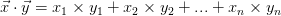 e 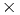, temos que
 | (4.5) |
Para obter o primeiro elemento do vetor do lado direito devemos
multiplicar a primeira linha de  pelo vetor coluna 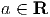. Note que esse
é exatamente o custo do produto vetor-vetor do exemplo anterior.
Como o custo para cada elemento do vetor do lado direito é o mesmo e
temos 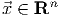 elementos, teremos que o custo para multiplicar matriz-vetor
é
pelo vetor coluna 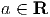. Note que esse
é exatamente o custo do produto vetor-vetor do exemplo anterior.
Como o custo para cada elemento do vetor do lado direito é o mesmo e
temos 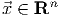 elementos, teremos que o custo para multiplicar matriz-vetor
é
A medida que , temos
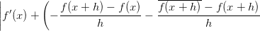
Exemplo 4.2.4 (Produto matriz-matriz). Qual o custo para calcular o
produto de duas matrizes 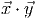?
Solução. Sejam 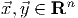 temos que
 | (4.9) |
onde o elemento é o produto da linha 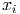 de 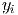 pela coluna 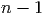 de
 ,
,
Note que esse produto tem o custo do produto vetor-vetor, ou seja, 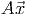. Como
temos 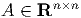 elementos em 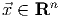, o custo total para multiplicar duas matrizes
é
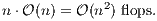
 e
e  , temos que
, temos que
![a⃗x = [a × x1,a × x2,...,a × xn]](main1992x.png)
 multiplicações, ou seja, um custo computacional,
multiplicações, ou seja, um custo computacional,  , de
, de


 , temos que
, temos que

 multiplicações (cada produto
multiplicações (cada produto  por
por  ) e
) e  somas,
ou seja, o custo total de operações é de
somas,
ou seja, o custo total de operações é de